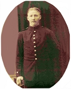

Fritz Eugen Fredman
Bonde på Zefansvik 1, Björksele, Lycksele sn 1915. Blev 30 år.
| Född: | 1889-06-05 Björksele fs, Lycksele sn. [1] | Föräldrar: Frans Edvard Fredman och hustrun Tilda Agata Grahn, Norsjö kyrkoby. |
|---|
| Döpt: | 1889-07-22 Björksele fs, Lycksele sn. [2] | Dopet konfirmerat 1889-07-22. Modern kyrkotatgen ibid. Födelseattest till Pastorsämbetet i Norsjö den 1889-07-22. Dopvittnen: Karl Jakob Grahn och hustru; A.G. Grahn och hustru; Johan Löfgren och Josefina Bjuhr. (Lycksele Födelse- och Dopbok). Föräldrarna är fortfarande skrivna i Norsjö fs, varför födseln också noterats i Norsjö fs Födelse- och Dopbok. |
|---|
| Inflyttad till: | 1890-12-30 Zefansvik 1, Björksele, Lycksele sn. [3] | Infl.attest 50/1890. |
|---|
| Värnplikt: | 1911 Grundfors 1, Björksele, Lycksele sn. [4] | Inskr Vpl 70/1911. |
|---|
| Omflyttad till: | 1912 Grundfors 1, Lycksele sn. [5] | |
|---|
| Omflyttad från: | 1915-12-12 Grundfors 1, Lycksele sn. [6] | |
|---|
| Omflyttad till: | 1915-12-12 Zefansvik 1, Björksele, Lycksele sn. [6] | |
|---|
| Död: | 1920-04-22 Zefansvik 1, Björksele, Lycksele sn. [7] | Dödsorsak: Difteri. |
|---|
| Begravd: | 1920-05-02 Björksele kyrkogård, Lycksele sn. [8] | Den första gravplatsen vid Björksele kyrkogård och fortfarande står ett enkelt kors i smitt järn med en rund minnesplatta med inskriften "Sörjen ej för jag går till Gud". Fritz Fredman var en djupt troende människa, vilket bl.a. dokumenterats genom bevarade brev.
Björksele kyrkogård, kv. A, nr. 5B (kista)
Graven upplåten till 31/12 2025
|
|---|
| Vigsel: | 1915-12-12 Zefansvik 1, Björksele, Lycksele sn. [6] |
|---|
Personhistoria
| Årtal | Ålder | Händelse |
|---|
| 1889 |
|
Födelse 1889-06-05 Björksele fs, Lycksele sn [1] |
| 1889 |
1 mån |
Dop 1889-07-22 Björksele fs, Lycksele sn [2] |
| 1890 |
1 år |
Inflyttad till 1890-12-30 Zefansvik 1, Björksele, Lycksele sn [3] |
| 1892 |
3 år |
Makan Lydia Margareta Josefina Karlsdotter Johansson föds 1892-10-07 Släppträsk 1, Lycksele sn [9] |
| 1895 |
5 år |
Brodern Johan Edvard Fredman föds 1895-01-01 Zefansvik 1, Björksele, Lycksele sn |
| 1895 |
5 år |
Brodern Johan Edvard Fredman dör 1895-01-10 Zefansvik 1, Björksele, Lycksele sn |
| 1896 |
6 år |
Brodern Johan Ferdinand Fredman föds 1896-04-03 Zefansvik 1, Björksele fs, Lycksele sn [10] |
| 1901 |
12 år |
Systern Rut Augusta Maria Fredman föds 1901-09-09 Zefansvik 1, Björksele, Lycksele sn |
| 1905 |
16 år |
Brodern Harald Ingevald Paulin Fredman föds 1905-09-13 Zefansvik 1, Björksele, Lycksele sn |
| 1911 |
|
Värnplikt 1911 Grundfors 1, Björksele, Lycksele sn [4] |
| 1912 |
|
Omflyttad till 1912 Grundfors 1, Lycksele sn [5] |
| 1915 |
26 år |
Omflyttad från 1915-12-12 Grundfors 1, Lycksele sn [6] |
| 1915 |
26 år |
Omflyttad till 1915-12-12 Zefansvik 1, Björksele, Lycksele sn [6] |
| 1915 |
26 år |
Vigsel Lydia Margareta Josefina Karlsdotter Johansson 1915-12-12 Zefansvik 1, Björksele, Lycksele sn [6] |
| 1916 |
26 år |
Dottern Hulda Josefina Fredman föds 1916-01-20 Zefansvik 1, Björksele, Lycksele sn [6] |
| 1916 |
27 år |
Dottern Hulda Josefina Fredman dör 1916-10-03 Zefansvik 1, Björksele, Lycksele sn [6] |
| 1917 |
28 år |
Sonen Ingvar Valentin Fredman föds 1917-10-08 Zefansvik 1, Björksele, Lycksele sn [11] |
| 1918 |
29 år |
Sonen Henry Konstantin Fredman föds 1918-10-15 Zefansvik 1, Björksele, Lycksele sn [6] |
| 1919 |
29 år |
Sonen Henry Konstantin Fredman dör 1919-03-05 Zefansvik 1, Björksele, Lycksele sn [6] |
| 1920 |
30 år |
Död 1920-04-22 Zefansvik 1, Björksele, Lycksele sn [7] |
| 1920 |
|
Begravning 1920-05-02 Björksele kyrkogård, Lycksele sn [8] |
Källor
| [1] | Norsjö C:4 (1888-1892) 86/1889 s.68 k.3/6, AI:8 (1882-1891) fol. 8 k.1/13, Lycksele AI:14B (1890-1899) fol. 644 k.27/29 |
| |
| | |
| [2] | Lycksele C:5 (1887-1889) k.8/9, Norsjö C:4 (1879-1894) 86/1889 s.68 k.3/6 |
| |
| | |
| [3] | Norsjö AI:8 (1882-1891) fol. 8 k.1/13, Lycksele AI:14B (1890-1899) fol. 644 k.27/29 |
| |
| | |
| [4] | Lycksele AII:1E (1900-1920) fol. 1110 k.5/7, AII:1B (1900-1920) fol. 357 k.4/6 |
| |
| | |
| [5] | Lycksele AII:1B (1900-1920) fol. 357 k.4/6 |
| |
| | |
| [6] | Lycksele AII:1E (1900-1920) fol. 1110 k.5/7 |
| |
| | |
| [7] | Lycksele AII:1E (1900-1920) fol. 1110 k.5/7, F:5 (1913-1927) |
| |
| | |
| [8] | Lycksele F:5 (1913-1927) |
| |
| | |
| [9] | Lycksele AI:14B (1890-1899) fol. 494 k.21/29 |
| |
| | |
| [10] | Lycksele AII:1B (1890-1899) fol. 644 b.27/29 |
| |
| | |
| [11] | Lycksele AII:1E (1900-1920) fol. 1110 k.5/7, C:9 (1917-1927) s.30 k.1/9 |
| |
|
 |
| Min farfar Fritz Fredman, som jag aldrig fick träffa. Han dog ung i difteri. |
| |
|  |
| Min farfar Fritz Fredman, som jag aldrig fick träffa. Han dog ung i difteri. |
|

{kind=link}